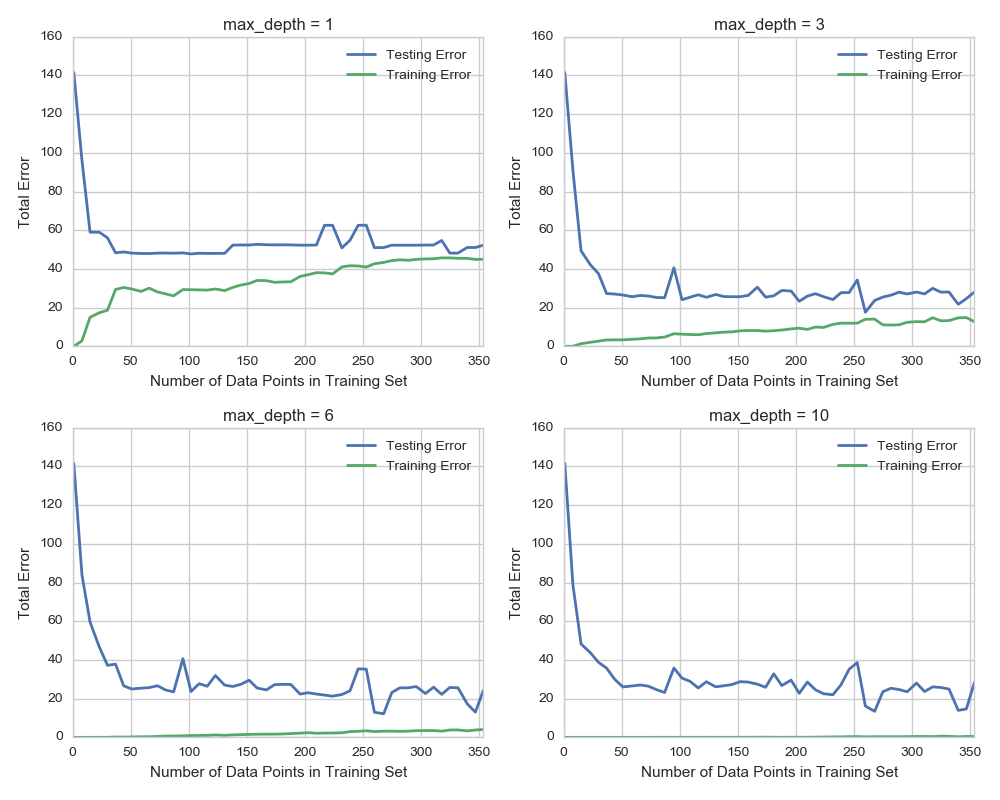

The learning curves for different max-depth parameters are plotted.
Choose one of the learning curve graphs that are created above. What is the max depth for the chosen model? As the size of the training set increases, what happens to the training error? What happens to the testing error?
Looking at the model with max-depth of 3, as the size of the training set increases, the training error gradually increases. The testing error initially decreases, then seems to more or less stabilize.
Look at the learning curve graphs for the model with a max depth of 1 and a max depth of 10. When the model is using the full training set, does it suffer from high bias or high variance when the max depth is 1? What about when the max depth is 10?
The training and testing plots for the model with max-depth 1 move toward convergence with an error near 50, indicating a high bias (the model is too simple, and the additional data isn’t improving the generalization of the model).
For the model with max-depth 1, the curves haven’t converged, and the training error remains near 0, indicating that it suffers from high variance, and should be improved with more data.
From the model complexity graph above, describe the training and testing errors as the max depth increases. Based on your interpretation of the graph, which max depth results in a model that best generalizes the dataset? Why?
As max-depth increases the training error improves, while the testing error decreases up until a depth of 6 and then begins a slight increase as the depth is increased. Based on this I would say that the max-depth of 6 created the model that best generalized the data set, as it minimized the testing error.